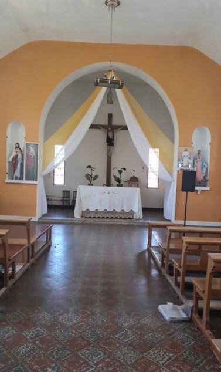
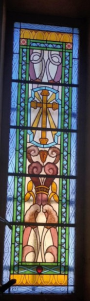
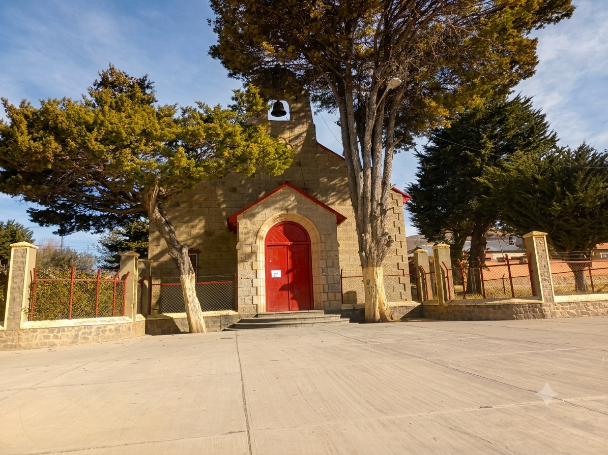

Exterior

Vista frontal
Fachada principal de piedra.

Frontal izquierda
Ángulo cercano desde el atrio.

Frontal derecha
Vista cercana en escorzo.

Lateral izquierda
Muros y contrafuertes.

Lateral derecha
Ventanas altas.

Vista trasera
Integración con el pueblo.

Trasera lejana
Panorámica posterior.

Vista aérea
Conjunto completo.
Interior

Nave central
Vista hacia el altar.

Altar principal
Retablo en pan de oro.

Virgen del Buen Consejo
Festividad 26 de abril.

Virgen del Buen Consejo
Advocación mariana.

Vitrales
Luz tamizada de colores.
Detalles

Portada
Detalle de piedra labrada.

Muro lateral
Aparejo de piedra.